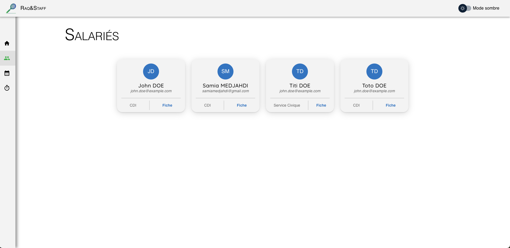
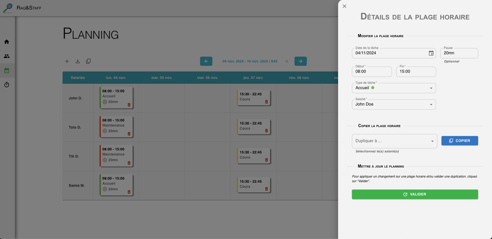
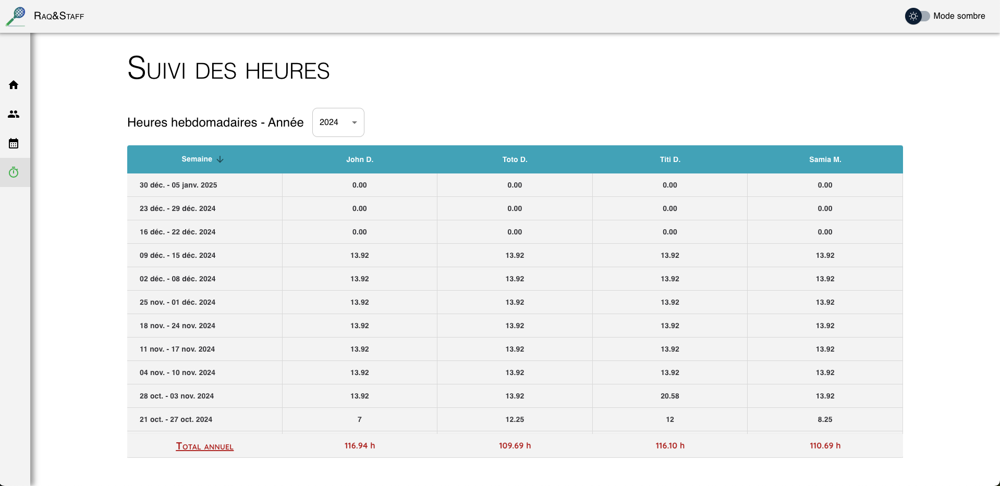

Features

Manage employeesCreate employees, add or modify their essential information, archive old employees... |

|
|

|

Create schedulesManage employee schedules by creating time slots. You can then modify, copy or delete them, and even duplicate an entire week to other weeks to save time! Don't forget to download your schedules in PDF... |
Hours trackingKeep track of your employees' working hours, on a monthly or annual basis, or by type of assignment. |

|